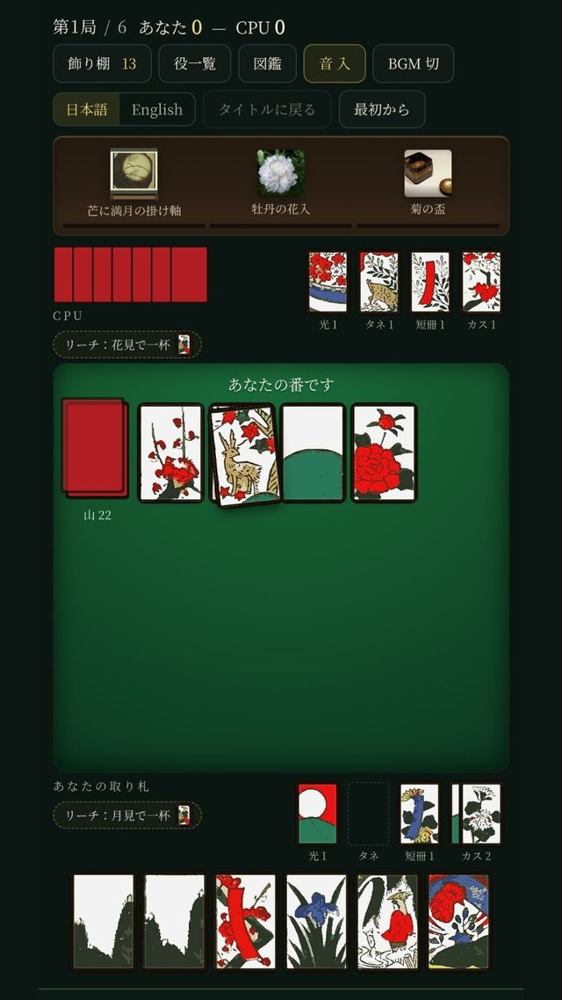
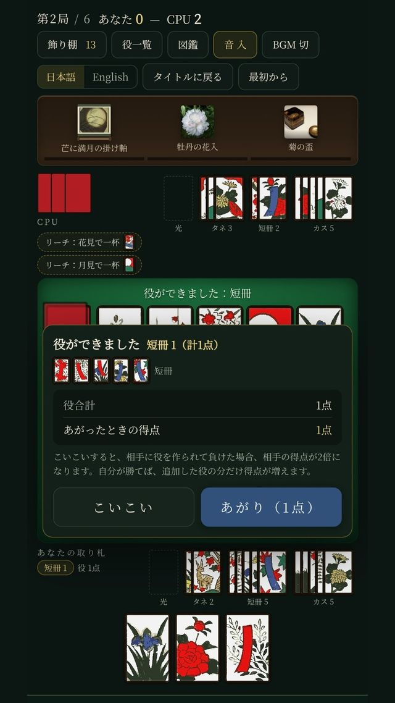
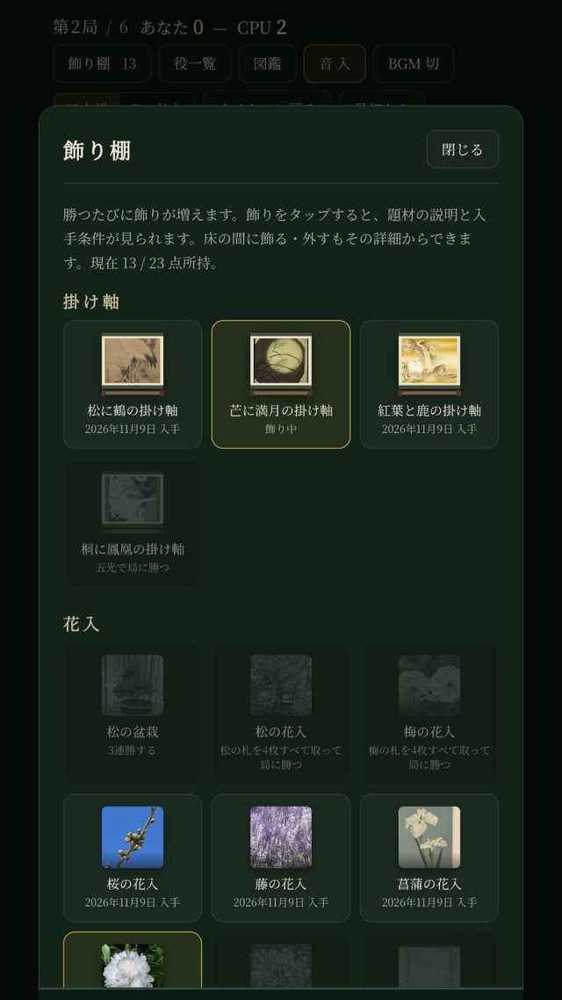
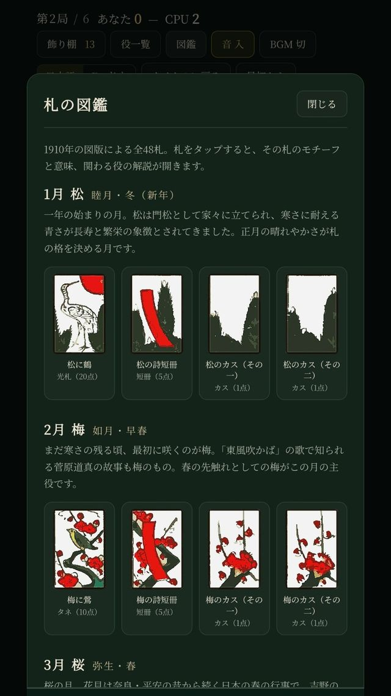
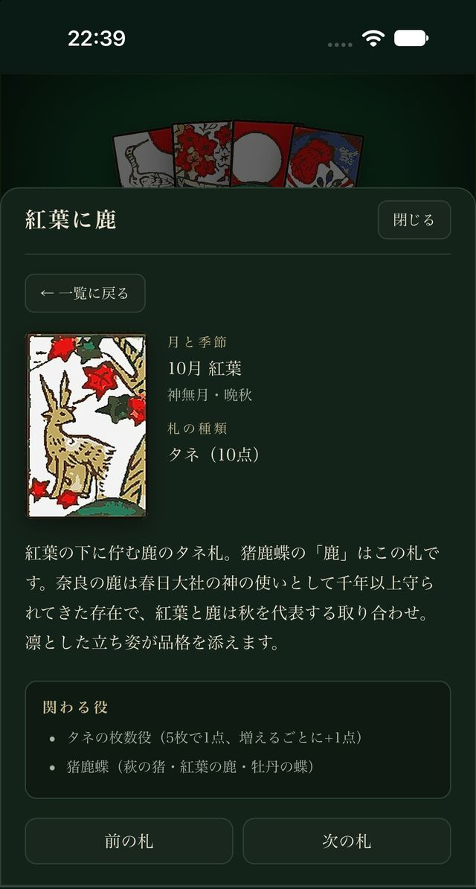

特徴
-
対局を中断する広告なし
動画広告で対局が止まることはありません。表示されるのは画面下部のバナー広告のみです。
-
1910年の図版の札
札の絵柄は、1910年（明治43年）発行の図版をもとにしています。昔ながらの花札の絵をそのままに遊べます。
-
CPUと全6局の勝負
CPUとの対戦は全6局、合計点を競います。難易度も選べるので、初めての方から慣れた方までどうぞ。
-
季節の飾り 全47点
勝つと床の間に季節の飾りが増えていきます。全47点のコレクションを、少しずつ集める楽しみがあります。
-
オフラインで遊べる
対局は通信なしで遊べます。移動中や電波の届かない場所でも、そのまま続けられます。
-
登録不要・課金なし
アカウント登録は不要で、アプリ内課金もありません。開いてすぐに遊べます。
スクリーンショット





こいこいとは
こいこいは、花札の代表的な遊び方です。手札と場札のうち、同じ月の札同士を合わせて取り合い、 取った札で「役」を作って得点を競います。1局ごとに先に役を作った方が勝ちですが、 そこで「あがり」にせず「こいこい」と続行して、さらに大きな得点を狙うこともできます。
続ければ点は伸びますが、相手に先に役を作られると負けになることもある。 その駆け引きが、こいこいの一番の面白さです。本アプリでは、CPUとの全6局の合計点で勝負します。
- 月見で一杯
- 花見で一杯
- 猪鹿蝶
- 赤短・青短
花札にまつわる話
- 映画『サマーウォーズ』（2009年）のクライマックスでは、こいこいでの対決が描かれました。
- 任天堂は1889年に花札の製造で創業した会社で、宇治のニンテンドーミュージアムでは花札づくりの体験もできます。
- 『鬼滅の刃』では主人公の耳飾りが花札の絵柄をモチーフにしており、花札のデザインが若い世代にも広く知られました。
- ゲーム『龍が如く』シリーズでは、こいこいがミニゲームとして収録されています。
- 家族や親戚が集まるお正月の遊びとしても、長く親しまれてきました。